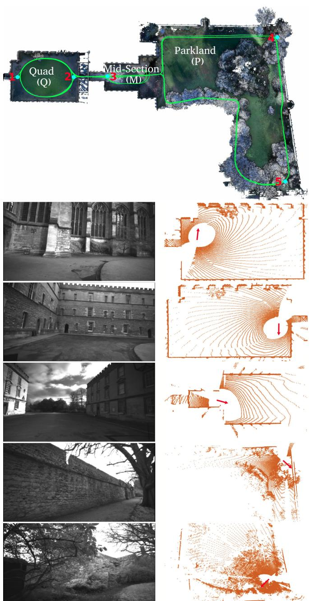
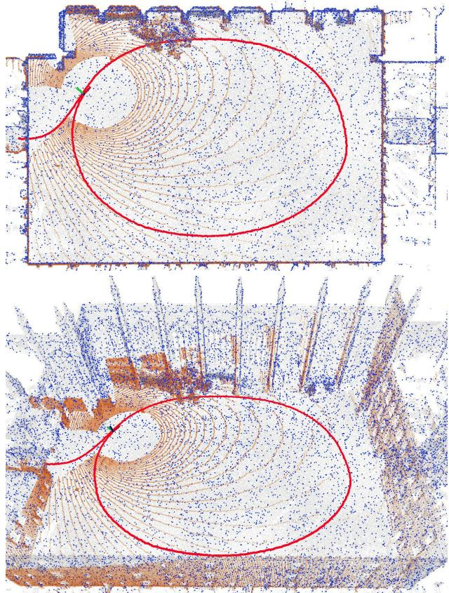

原图注（Fig. 2）：Devices used in our dataset. Top left: our custom built handheld device; Top right: front view of the 3D CAD model with reference frames; Middle: isometric and top-down views of the URDF model; Bottom: Leica BLK360 for creating the ground truth map. 怎么看这张图：左边是你手持的那台设备（激光+相机+IMU 一体），右下角那台三脚架上的大方块就是用来造真值的 Leica BLK360 测绘扫描仪——注意它不参与实时录制，只在建先验地图阶段用。中间是设备的坐标系定义（真值参考系特意取「左相机中心」，方便插值出 30 Hz 相机位姿）。

原图注（Fig. 1）：Top: a bird's eye view of the 3D model of New College generated with a Leica BLK360 scanner and the ground truth trajectory obtained by the proposed approach. Bottom: image samples and corresponding 3D LiDAR scans from the Quad / Mid-Section / Parkland show varied environments. 怎么看这张图：这张图是整篇的「名片」——上方俯视图里那条彩色线就是他们造出来的真值轨迹，叠加在测绘扫描仪建出的 3D 模型上；下方三组样例分别来自 Quad（结构化建筑立面）、Mid-Section（开阔地+光照骤变）、Parkland（茂密植被）。盯着那条轨迹看：它绕了园区一大圈，这正是动捕房装不下的尺度。
生活类比：用一把「最小刻度 1 cm 的卷尺」去量一条 2 公里长的路，你能量到厘米，但量不到毫米。Newer College 就是这把卷尺——它能量得足够细，看得出你走路的周期性抖动，但别指望它去评「亚厘米级 3D 模型」。
这张图在画什么：一把横放的「精度阶梯尺」，分毫米 / 厘米 / 亚米三档，每档标出代表数据集和能覆盖的空间大小。Newer College 被标在厘米档（≈3 cm），并单独列出它上不到毫米的三条原因。 怎么看这张图：① 精度档位和「能覆盖多大空间」是此消彼长的——越准的尺，空间越小；② Newer College 用「间接法（扫描对底图）」换来了公里级覆盖，代价是精度让一档到厘米；③ 它和 TUM 不是一回事：TUM 是动捕直接测，所以更准但走不出小房。 要记住的一句话：厘米级是「大场景 + 间接真值」的诚实天花板；别拿它的 3 cm 去和 TUM 的 <1 mm 比。
5. ★ 覆盖哪些场景：退化场景是题眼
场景在牛津新学院，按 2009 年原 New College 数据集的路径分三段：Quad（椭圆草坪 + 重复建筑立面，结构化）、Mid-Section（短隧道 + 光照骤变 + 两侧建筑的开阔地，非结构化/光照变化）、Parkland（花园、碎石泥路、茂密植被边界，无建筑结构，对视觉极难）。规模约 2.2 km、总时长 2300 s，还含光照对比与剧烈运动的补充序列。
本篇最该被记住的是它专门含退化场景：长走廊、隧道等几何退化段。所谓「退化」，就是传感器拿不到足够约束——比如一条两侧都是白墙的长走廊，激光打上去回波都差不多、视觉也找不到特征点，于是算法既不敢确定自己前进了多少、也分不清左右。这种地方恰恰是 SLAM 最容易漂的地方。
这篇不定义新误差指标（指标是 TUM 的 ATE / 相对误差），它给的是一套基准任务 + 评测协议：
任务集
① LiDAR-SLAM；② 视觉回环（DBoW2+ORB）；③ 3D 重建（Poisson 等）；④ 视觉(惯性)里程计（ORB-SLAM2、VILENS）。
真值形式
6-DoF 位姿（30 Hz 插值）直接提供，用户自己用 ATE / 相对误差去比。
协议核心
真值是「扫描对先验地图的 ICP 注册」，所以比较时要记住 ~3 cm 天花板，别指望评亚厘米。
论文还给了基线：ORB-SLAM2（关回环）、VILENS 在首 1483 s 的轨迹可视化对比，LiDAR-SLAM 在全长 2 Hz 建图。这些基线不是「标准答案」，而是告诉你「拿这把尺能量出什么」。

原图注（Fig. 4）：Plan and perspective view of the Quad when current laser scan (in maroon) is registered against the reference cloud (in blue). The reference cloud is part of the prior map (in gray) cropped around the pose. 怎么看这张图：这张图展示了「真值是怎么验的」——栗色是你当前扫描，蓝色是它注册到的参考云（来自灰色先验地图的局部裁切）。两者贴合得好，说明 ICP 注册成功、真值可信。盯着看：扫描（红）几乎严丝合缝地盖在参考云（蓝）上，这正是 ~3 cm 精度的直观证据。